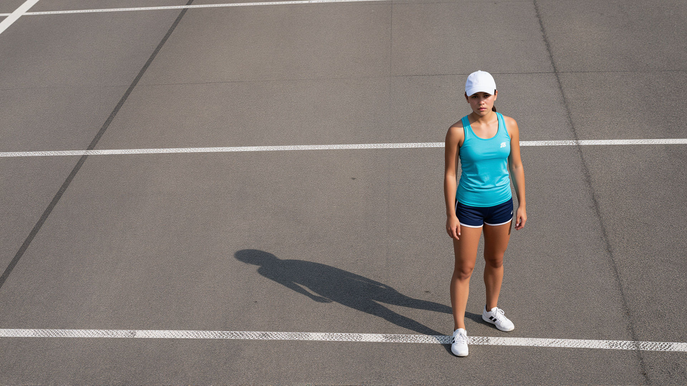

A working portfolio for a landscape photographer who chases the quiet hours across northern Europe. Each image is printed large, each print is numbered, and the studio keeps a small archive of the light that made them.
This page is a portfolio in the same format as a product brief: plain Markdown at the source, and the enhanced renderer gives it a hero, a split, and a gallery.
The signature image: a thin ridge holding its last shadow as the light turns.
The studio works from a single base but travels far for the right weather. Most frames are made on foot, carried in a small pack, and kept only when the light is doing something the place has not done before.
Mara shoots on film and digital in equal measure, and prefers a tripod to a fast lens. The subjects are largely unmoving — ice, stone, water, weather — so the work is really about patience and the willingness to wait a full season for a single hour.
The photograph above is ordinary Markdown inside the column: it needs no directive of its own, only the column it lives in.
| Detail | Choice |
|---|---|
| Focus | Alpine landscapes |
| Base | Tromsø, Norway |
| Years active | 2014–present |
| Print size | 30 × 40 in |
Constraint: every print is made to hang in daylight without glare.
A block that opens with a list of images is one gallery. Each image keeps its own alternative text, and the caption at the end belongs to the whole collection rather than any single frame.

Four seasons, one practice. The prints are shown in the order the studio prefers to hang them, not in the order they were made.
When a single photograph needs its own story or crop, it gets its own block rather than a list item.
This section carries its own timing data. The seconds variable belongs only to this section and does not affect any other part of the portfolio.
The current wall is a single long run of highland and glacier work, printed at 30 × 40 inches and hung in a continuous line. Visitors are asked to move slowly; the room is arranged to be read, not skimmed.
Each print is limited to an edition of twenty and is signed once it has been made. Once an edition sells out, the photograph retires from the portfolio and returns to the studio archive.
Enquiries about prints, commissions, and the small archive of unprinted work are handled directly by the studio. The studio replies to most messages within a week, and prefers a short note about the specific photograph over a general one.
Document data lives in the frontmatter, section data lives in var, and the structure is a handful of directives around ordinary Markdown.